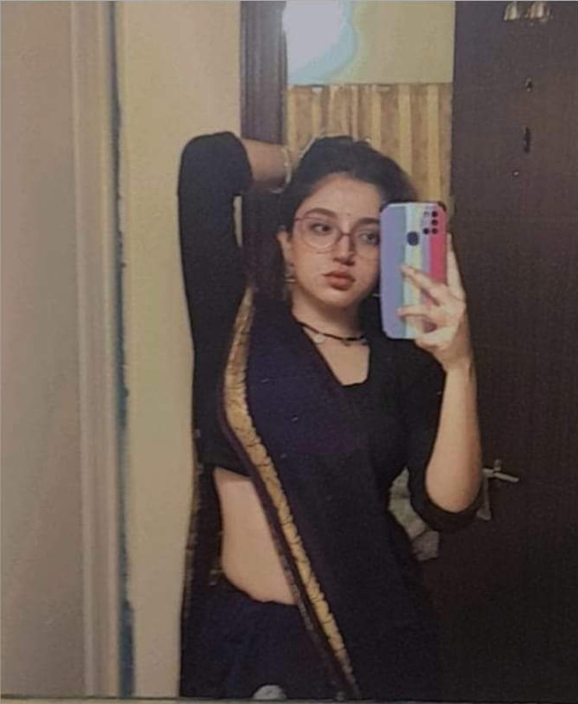
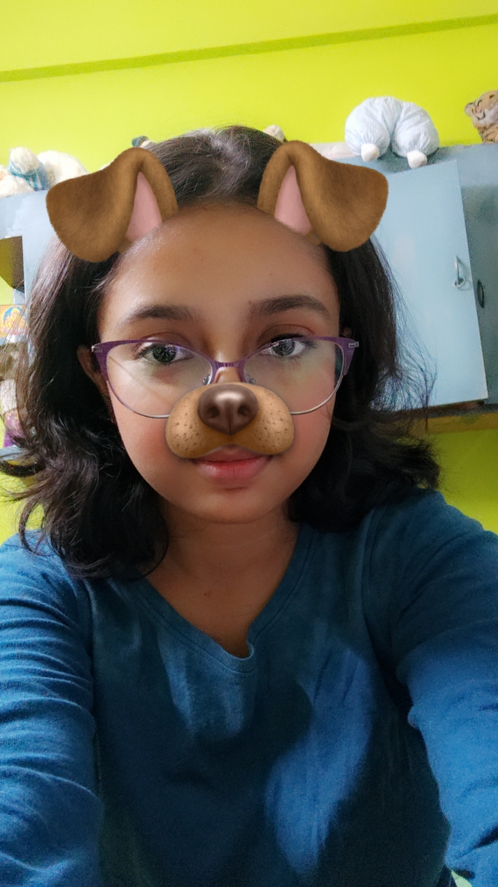

hey i been sitting here for a while tryna figure out how to say what im feeling and i swear no words feel right but im still writing this because u deserve to know all of it every bit of what u mean to me even if it comes out messy i still remember those days before boards when we used to sit and study together pretending we were focused but half the time i was just watching u exist and we were also making out hihi and that felt better than anything else in the world like even when we were stressed it was calm when u were around but i dont think i fell in love with u while studying it happened during those walks from tuition back thru those gachtala lanes when the sky was dark and everything felt soft and still and it was just u and me like the world went quiet around us those were the moments that changed everything for me then the park days remember those those smokes we shared laughing talking and i felt like you were the only one for me and maybe it sounds stupid now but smoking with u felt like the most honest thing like we were just being us no filters no pressure and yeah it turned into a pretty bad addiction for me i wont lie but i wanna let u know im tryna leave it behind for u because being better for u matters more than anything id give that shit up without thinking twice if it makes u feel even a little safer with me i know things aint feeling right lately sometimes i forget that you fake your smile, and i feel okay too and im sorry that i havent been there for you at all and you act happy when it’s really not i know your not feeling happy deep down maybe not even safe and its drowning u and i hate that i hate that i cant take that weight off u but im here always here u wanna cry scream stay quiet anything im not going anywhere i’ll hold u through the heavy days i’ll listen when u wanna rant i’ll even cuss myself out if thats what u need that day i won’t act like the perfect boyfriend ill just be ur best friend when u need me to be and when ur feeling alone when everything feels too much and like no ones really seeing u im just one call away and not outta duty not because i have to but because i want to i want to be there for u in all the little and big ways loving u has never been about flowers or poems or any of that its been in those silences the walks the way u say my name the way u overthink and then pretend like u dont i notice all of it all the tiny things and i swear they stay with me ur not alone not now not ever not while i breathe - jage ho??
 